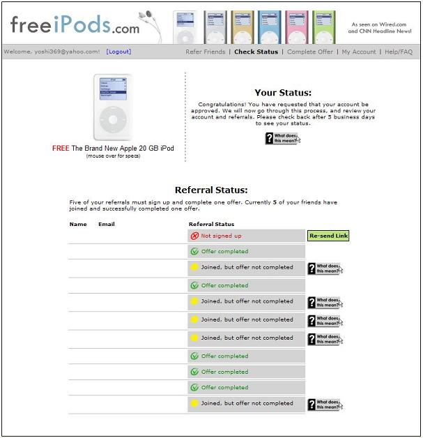

This week is Midterm week, an every-semester tradition for all college students, whether they admit it or not. Each year, it's a little different. Sometimes there are tests, other times there are projects. Sometimes there's nothing at all, and you just have to bear with the annoying study habits of others while you putt around the golf course alone. This year, I seem to have a bit of everything. I had my Shakespeare midterm yesterday. I think it went alright, there was one identification I wasn't 100% sure about, but I know I more or less nailed the others. After that, I went to work on my webpage for my website class. We need to have our personal website done by Friday, and though I already have a personal website, I am making a completely different site for the class to try out some different models of HTML that I don't usually work with. Now this is a work in progress...
If you want to see my class website, click here
I've also been busy on random articles I'm trying to write. My proposed article on the gay marriage forum is a bust, though. The forum is at 5:30, and I have to go to work, like, NOW, until 10 p.m. I hate work. It sucks so bad. Today's the day of the super paycheck though. That will go a long way to help pay for my car registration AND my car insurance for the next 6 months. Yup, it's been six months already, go figure.
Oh, there's something else I wanted to post here. It's a work in progress, but once I have all the pieces together, I'm going to make me a little vengeance page against those idiots at the Adult Swim message board. We'll see if it's a scam...

The names have been changed to protect the innocent. Well, actually, the names have been whited out, except for my e-mail address. Spammers and such already know it, I get spammed to kingdom-come, and it should be all over my webpage. No secret there. I'd like to thanks my five lucky individuals for helping my account get to this state of "processing." It's sure taken long enough. Like I said earlier, Mom opted for an offer she actually wanted that took over a week to get credit for. I'll keep all who are interested updated on my iPod's progress. I can't wait to join the pretentious "white ear bud" majority. We will rule the world!
So, off to work for me. I hope for more incentives this week (and incentives last week too...a modest amount would be fine with me). Oh, also, I think Cheney kicked Edward's ass last night, but all-in-all, it was a weak debate. Lots of rhetoric, replayed stump speeches, and empty attacks. I like Cheney though, I think he's a good man, and a good vice-president. Cheney for President? Maybe, but only if he was against any gay marriage amendment AND he instituted some form of civil union. We'll just have to replace his broken ticker and wait for the day, I suppose...
| Current Mood | Estoy Cansado | ||
| Current Music | garbage - You Look So Fine (Fun Loving Criminals Remix) |
Just an iPod update...